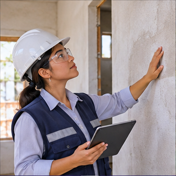

INGENIERÍA / COMUNIDAD / PREVENCIÓN
CONSTRUIR CON CRITERIO
Diagnóstico de vivienda
Información clara para tomar mejores decisiones sobre tu hogar.

Este diagnóstico es orientativo y no reemplaza una evaluación profesional.

INGENIERÍA / COMUNIDAD / PREVENCIÓN
CONSTRUIR CON CRITERIO
Información clara para tomar mejores decisiones sobre tu hogar.
Este diagnóstico es orientativo y no reemplaza una evaluación profesional.
